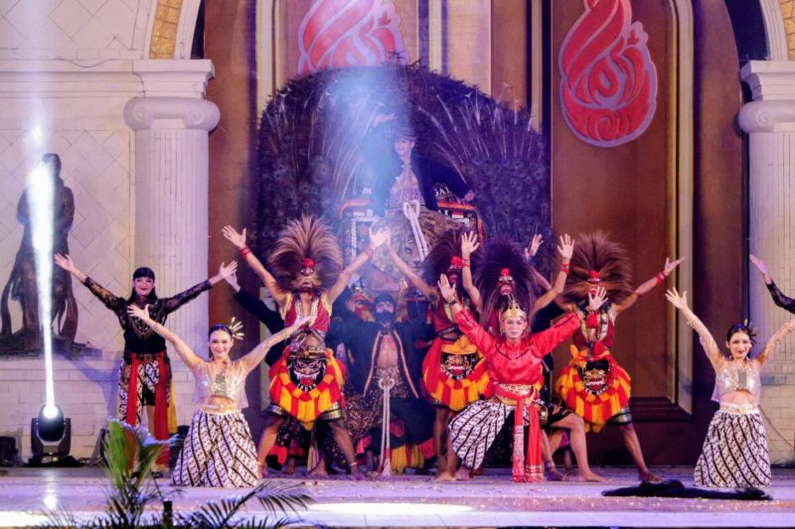

PONOROGO, KOMPAS.com - Kabupaten Ponorogo, Jawa Timur, kembali menggelar hajatan budaya tahunan berskala besar. Semarak perayaan Grebeg Suro 2026 kini mulai terasa kuat di seluruh sudut wilayah yang dikenal sebagai Kota Bumi Reog tersebut. Untuk menyambut datangnya Tahun Baru Islam 1448 Hijriah, Pemerintah Kabupaten (Pemkab) Ponorogo telah menyiapkan sedikitnya 29 rangkaian kegiatan spektakuler. Seluruh agenda tersebut dijadwalkan bergulir sepanjang bulan Juni hingga Juli 2026 mendatang.
Rangkaian acara pada tahun ini dipastikan jauh lebih meriah karena mengombinasikan berbagai agenda kebudayaan, religi, olahraga, hingga pameran ekonomi kreatif. Langkah strategis ini diambil guna mendongkrak kunjungan wisatawan lokal maupun mancanegara, sekaligus memutar roda perekonomian daerah setempat.
“Total ada 29 acara untuk perayaan Grebeg Suro. Rangkaiannya sebenarnya sudah dicicil dimulai dari Bulan Mei lalu,” ungkap Plt Bupati Ponorogo, Lisdyarita, Kamis (4/6/2026).
Wanita yang akrab disapa Bunda Lisdyarita tersebut menjelaskan bahwa beberapa pra-acara telah sukses digelar dan mendapat antusiasme tinggi dari masyarakat. Di antaranya adalah Simaan Al-Qur'an pada pertengahan Mei, serta Festival Pencak Silat "Jawara Bumi Warok Ponorogo" di akhir Mei kemarin.
Festival Nasional Reog Ponorogo Jadi Magnet Utama
Salah satu magnet utama yang paling dinantikan oleh masyarakat dan pelancong, yakni Upacara Pembukaan Grebeg Suro, Festival Reog Remaja XXII, serta Festival Nasional Reog Ponorogo (FNRP) XXXI, dijadwalkan bakal mulai menghentak pada Sabtu, 6 Juni 2026 mendatang.
“Pusatnya ada di Alun-alun Ponorogo. Nantinya puluhan peserta akan menyuguhkan penampilan seni reog terbaik mereka selama seminggu penuh,” tambah Lisdyarita. Ia juga membocorkan bahwa jumlah peserta FNRP tahun ini mengalami lonjakan yang cukup drastis. Hal ini terlihat dari kehadiran banyak grup reog baru, baik yang berasal dari lokal Ponorogo maupun dari luar daerah.
“Pusatnya ada di Alun-alun Ponorogo. Nantinya puluhan peserta akan menyuguhkan penampilan seni reog terbaik mereka selama seminggu penuh,” tambah Lisdyarita. Ia juga membocorkan bahwa jumlah peserta FNRP tahun ini mengalami lonjakan yang cukup drastis. Hal ini terlihat dari kehadiran banyak grup reog baru, baik yang berasal dari lokal Ponorogo maupun dari luar daerah. “Pusatnya ada di Alun-alun Ponorogo. Nantinya puluhan peserta akan menyuguhkan penampilan seni reog terbaik mereka selama seminggu penuh,” tambah Lisdyarita. Ia juga membocorkan bahwa jumlah peserta FNRP tahun ini mengalami lonjakan yang cukup drastis. Hal ini terlihat dari kehadiran banyak grup reog baru, baik yang berasal dari lokal Ponorogo maupun dari luar daerah.
Ada apa saja di Rumah Betang Pasir Panjang?
Edisi Spesial Usai Pengakuan Internasional UNESCO
Gelaran Grebeg Suro Ponorogo 2026 kali ini terasa sangat istimewa dan penuh kebanggaan bagi masyarakat. Pasalnya, status seni Reog Ponorogo kini telah resmi diakui di dunia internasional setelah ditetapkan sebagai Warisan Budaya Tak Benda atau Intangible Cultural Heritage (ICH) oleh UNESCO.
Selain itu, Kabupaten Ponorogo sekarang juga telah sah menjadi bagian dari jaringan kota kreatif dunia atau UNESCO Creative Cities Network (UCCN). Melihat potensi besar tersebut, Kepala Dinas Kebudayaan, Pariwisata, Pemuda dan Olahraga (Disbudparpora) Ponorogo, Judha Slamet Sarwo Edi, berharap momentum emas ini dapat dimanfaatkan secara optimal oleh segenap elemen industri lokal.
Judha mengimbau para pelaku UMKM, industri perhotelan, restoran, hingga agen travel untuk terus menggali kreativitas produk mereka. Upaya ini dinilai penting guna menyerap perputaran uang dari jutaan wisatawan yang diprediksi akan memadati wilayah Ponorogo selama festival berlangsung.
Jadwal Lengkap 29 Agenda Grebeg Suro Ponorogo 2026
Bagi Anda yang ingin menyaksikan langsung kemeriahan wisata budaya Ponorogo, berikut adalah lini masa dan lokasi lengkap seluruh rangkaian acara Grebeg Suro Ponorogo 2026:
1.Simaan Al-Qur'an Rabu Pahing (19-20 Mei 2026) – Pendopo Agung Ponorogo
2.Festival Pencak Silat "Jawara Bumi Warok" (30 Mei 2026) – Depan Paseban Alun-alun
3.Istighotsah & Dzikir Jamaah Al-Hikmah (1 Juni 2026) – Pendopo Agung Ponorogo
4.Grebeg Bonsai Bumi Reog 2026 (3-9 Juni 2026) – Halaman Depan Pendopo Agung
5.Pameran Bonsai "Samandiman" (3-9 Juni 2026) – Area Patung Macan Alun-alun
6.Pembukaan Grebeg Suro, Festival Reog Remaja XXII & FNRP XXXI (6 Juni 2026) – Panggung Utama Alun-alun
7.Lomba Burung Perkutut Grebeg Suro Cup (7 Juni 2026) – Lapangan Gantangan P3SI (Jl. A. Yani)
8.Festival Reog Remaja XXII (7-10 Juni 2026) – Panggung Utama Alun-alun
9.Festival Macapat Pelajar (9-10 Juni 2026) – Lantai II Gedung Bapperida
10.Festival Lukisan (10-15 Juni 2026) – Gedung Eks SMP 3 (Jl. Hos Cokroaminoto)
11.Festival Nasional Reog Ponorogo XXXI (11-14 Juni 2026) – Panggung Utama Alun-alun
12.Pagelaran Pusaka (12-15 Juni 2026) – Pendopo Agung Ponorogo
13.Vespakultural (13 Juni 2026) – Monumen Reog (Sampung)
14.Parade Sepeda Unto (13-14 Juni 2026) – Mixzone Creative HUB
15.Ziarah Makam Leluhur/Tokoh Ponorogo (14 Juni 2026) – Makam Batoro Katong, Tegalsari, s/d Astana Srandil
16.Lomba & Pameran Burung Berkicau (14 Juni 2026) – Lapangan Kodim 0802
17.Bedol Pusaka & Macapat (14 Juni 2026) – Pringgitan ke Kota Lama
18.Karnaval Keroncong Ponorogo 24 Jam (15 Juni 2026) – Patung Warok Hos Cokroaminoto
19.Kirab Pusaka, Pawai Lintas Sejarah & Jamasan (15 Juni 2026) – Kota Lama ke Paseban Alun-alun
20.Penutupan Perayaan & Pengumuman Juara Reog (15 Juni 2026) – Panggung Utama Alun-alun
21.Wayang Kulit Malam 1 Suro (15 Juni 2026) – Mixzone Creative HUB
22.Laku Tirakatan (15 Juni 2026) – Start 4 Penjuru, Finish Pendopo Agung
23.Larungan Telaga Ngebel (16 Juni 2026) – Kawasan Wisata Telaga Ngebel
24.Mataraman #2 Grebeg Suro Rockfest (20-21 Juni 2026) – Panggung Utama Alun-alun
25.Grebeg Suro Adventure Offroad VII Nasional (25-28 Juni 2026) – Start/Finish Mixzone Creative HUB
26.Grebeg Suro Jatim Racing Series KEJURPROV (27-28 Juni 2026) – Sirkuit Alun-alun Ponorogo
27.Grebeg Suro Adventure Trail (5 Juli 2026) – Start/Finish Sirkuit Motocross, Rute Sukun Pulung
28.Grebeg Tutup Suran (8 Juli 2026 - selesai) – Kecamatan Kauman
29.Simaan Moloekatan (13 Juli 2026) – Kompleks Makam Masjid Batoro Katong
Bagi Anda yang berencana mengunjungi festival ini, pusat keramaian dan panggung utama sebagian besar ditempatkan di kawasan Alun-alun Ponorogo. Pastikan untuk memeriksa jadwal dan rute rekayasa lalu lintas lokal sebelum menuju ke lokasi acara,
Artikel ini telah tayang di TribunJatim.com dengan judul Daftar Lengkap 29 Acara Grebeg Suro Ponorogo 2026, Jadwal Festival Nasional Reog, dan Lokasinya